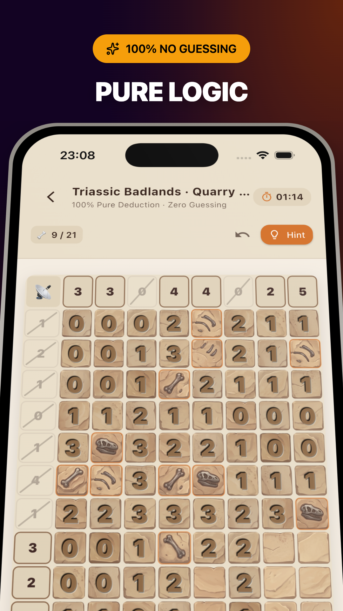
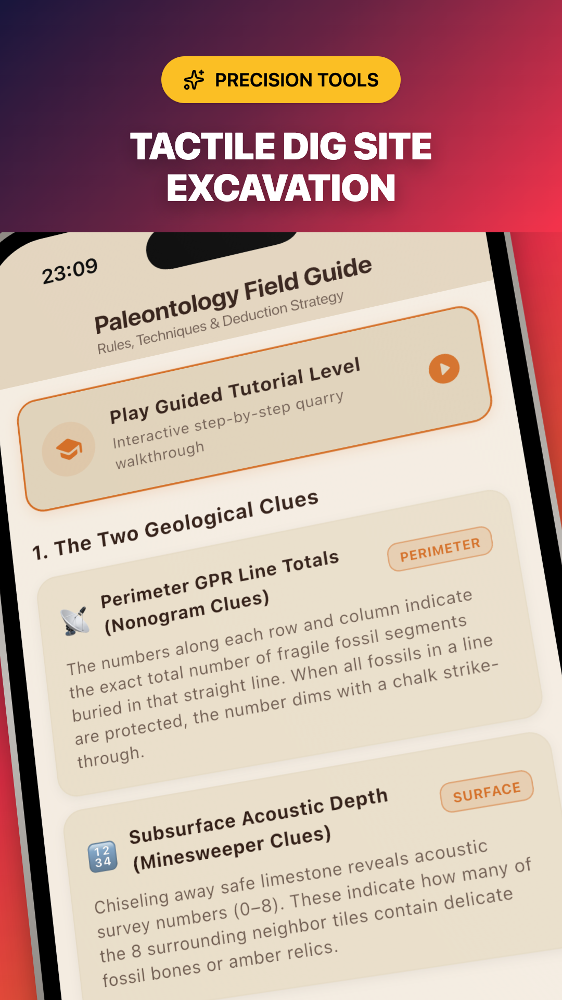
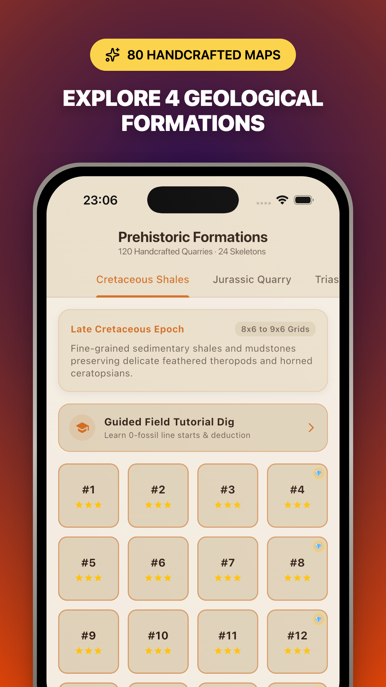
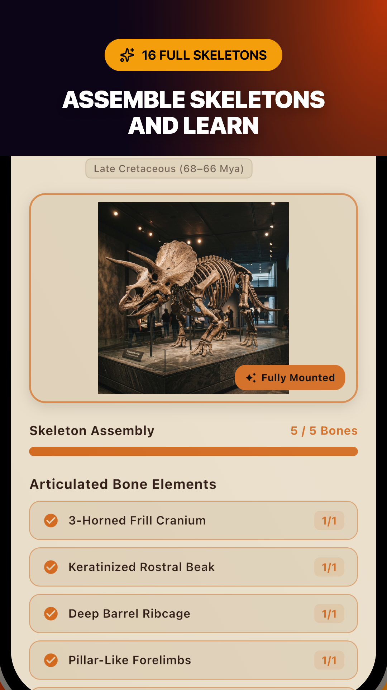

About DinoDig: Fossil Sweeper
DinoDig: Fossil Sweeper is a pure deductive logic puzzle game set in the world of paleontology. Combining the perimeter line constraints of Nonograms with the localized proximity numbers of Minesweeper, DinoDig delivers a completely deterministic puzzle experience where every single quarry is solvable through logic alone. No 50/50 guesses, no trial-and-error, and no luck required.




The Dual-Constraint Logic System
80 Handcrafted Quarries Across 4 Strata
Excavate through four distinct prehistoric geological formations with mathematically verified, 100% solvable layouts:
1. Cretaceous Shales
Master core excavation rules and zero-line sweeps across fine limestone beds.
2. Jurassic Quarry
Tackle expanding grids and complex multi-bone matrices in golden sandstone.
3. Triassic Badlands
Navigate intricate cluster deductions and acoustic depth cross-referencing.
4. Primeval Ridge
Test master-level logical subtraction on challenging slate and granite quarries.
Assemble the Museum Rotunda (16 Skeletons)
Every completed excavation recovers articulated bone segments. Reconstruct 16 complete prehistoric skeletons and uncover rare fossilized amber:
100% Deterministic Deduction
No 50/50 guessing traps or trial-and-error. Every quarry is mathematically proven to be solvable through pure deductive logic.
Museum Rotunda & Field Notes
Mount articulated skeletons on museum pedestals and read authentic paleontological field notes, historical eras, discovery sites, and anatomy trivia.
Steel Chisel & Plaster Jacket
Single-tap tool switching between excavation chiseling and protective plaster jacketing with chalk strike-through feedback.
Educational Logic Hint Engine
Stuck on an ambiguous section? Get clear, step-by-step logic explanations that teach the deductive reasoning without spoiling the puzzle.
Interactive Field Training
Guided tutorial quarry introduces perimeter scanners, acoustic proximity readings, and plaster jacket mechanics for new paleontologists.
100% Offline & Ad-Free
Zero advertisements, zero data tracking, zero in-app purchases, and fully playable offline anywhere on your commute or travels.
Launching Soon on Google Play & App Store
Package: com.fuzzydinolabs.dinodig • Rated Everyone • Built with Flutter